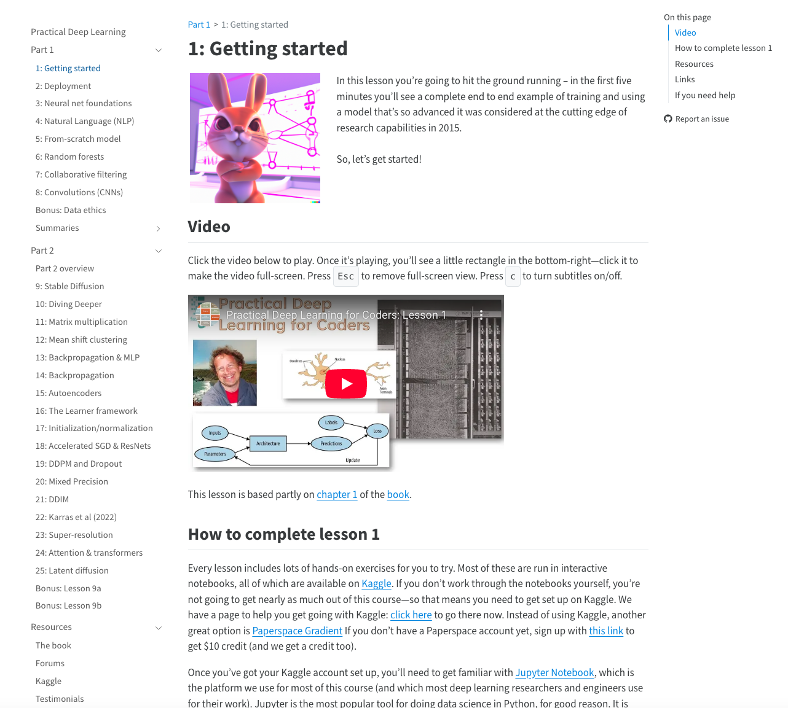

Setup#
Google Colab#
Access Google Colab#
Visit Google Colab and login with your email id.
Click on File and then New notebook in Drive
In the first code cell of your notebook, type the following command and execute it with CTRL + ENTER
!pip install groq python-dotenv gradio
Setup Groq API key#
Visit the Groq website
Go to Groq’s signup page
If you already have an account, go to Groq’s login page instead
Create an account
Fill in your email address
Create a secure password
Click on the signup button
Check your email for a verification link and click it to confirm your account
Access the API section
After logging in, navigate to the Groq Console
Look for “API Keys” in the left sidebar or navigation menu
Click on it to go to the API management section
Generate a new API key
Look for a button labeled “Create New API Key” or “Generate API Key”
You may need to provide a name for your key (e.g., “Colab Project”)
Click the button to generate your key
Copy and secure your API key
Your new API key will be displayed only ONCE
Copy the key immediately and store it securely
Consider saving it in a password manager or secure note
Remember that the key provides access to your Groq account and usage will be billed to you
Implement the key in your Colab notebook
In your Colab notebook, you can set it as an environment variable:
from google.colab import userdata
groq_api_key = userdata.get('GROQ_API_KEY')
Install packages#
Run this in a colab code cell
Get API key

Local#
If you have a local python development environment set up already, you can do the following.
Install UV#
We will prefer to use UV for python package management.
Detailed setup instructions are here: https://docs.astral.sh/uv/getting-started/installation/
Run this in your terminal
curl -LsSf https://astral.sh/uv/install.sh | sh
Run this in your terminal
powershell -ExecutionPolicy ByPass -c "irm https://astral.sh/uv/install.ps1 | iex"
Create and activate virtual environment#
Run this in your terminal
uv venv --python=python3.10
source .venv/bin/activate
Run this in your terminal
uv venv --python=python3.10
.venv\Scripts\activate
Install packages#
In the activated environment, run this script to install relevant python packages.
Run this in your terminal
uv pip install groq dotenv gradio
Groq#
To access models from the groq inference enginer, we need their API key.
Visit Groq’s platform and create an account if you don’t have one
Navigate to the API Keys section
Click “Create API Key”
Copy your API key to a secure location
Create a file whose filename is “.env”. Add you GROQ_API_KEY. Never expose this to anyone.
GROQ_API_KEY="your-api-key-here"
Create a python file, call it verify_groq.py
from dotenv import load_dotenv
from groq import Groq
load_dotenv()
client = Groq()
response = client.chat.completions.create(
model="llama3-8b-8192", # A basic model to test with
messages=[
{"role": "user", "content": "Say hello world"}
]
)
print(response.choices[0].message.content)
Properly securing your API key is important. Never commit API keys to public repositories
VS Code setup#
If you have a python development setup, you can skip this part.
Our directory so far#
Our directory structure should look like this now.
📁 genai_course ├── 📄 verify_groq.py ├── ⚙️ .env │ └── 🔑 GROQ_API_KEY="your-api-key-here"
Build your first chatbot#
Put the contents of this code in app_chatbot.py
from dotenv import load_dotenv
import gradio as gr
from groq import Groq
load_dotenv()
MODEL = "llama-3.3-70b-versatile"
client = Groq()
system_message = "You are a helpful assistant"
def chat(message, history):
history = [{"role": msg["role"], "content": msg["content"]} for msg in history]
messages = (
[{"role": "system", "content": system_message}]
+ history
+ [{"role": "user", "content": message}]
)
stream = client.chat.completions.create(model=MODEL, messages=messages, stream=True)
response = ""
for chunk in stream:
response += chunk.choices[0].delta.content or ""
yield response
gr.ChatInterface(fn=chat, type="messages").launch()
load_dotenv()Loads environment variables from the.envfile into the application.MODEL = "llama-3.3-70b-versatile"
Visit https://console.groq.com/docs/models to know which models exist.client = Groq()
Creates an instance of theGroqclient to interface with the model service.system_message = "You are a helpful assistant"
Sets a system prompt to instruct the assistant on its role.def chat(message, history):
Defines a functionchatthat takes a new message and the conversation history.history = [{"role": msg["role"], "content": msg["content"]} for msg in history]
Rebuilds the conversation history ensuring each message has aroleandcontent.messages = ([{"role": "system", "content": system_message}] + history + [{"role": "user", "content": message}])
Combines the system message, conversation history, and new user message into one list.stream = client.chat.completions.create(model=MODEL, messages=messages, stream=True)
Initiates a streaming chat completion request to the model using the assembled messages.response = ""
Initializes an empty string to store the model’s response.for chunk in stream:
Iterates over each chunk of the streamed response.response += chunk.choices[0].delta.content or ""
Appends the content from each chunk to the cumulative response, handling cases where the chunk might be empty.yield response
Yields the updated response so it can be streamed to the user in real-time.gr.ChatInterface(fn=chat, type="messages").launch()
Creates and launches a Gradio chat interface using thechatfunction for real-time interaction.
In your activated environment, run the following command.
Run this in your terminal
python app_chatbot.py
You might see an output like this
* Running on local URL: http://127.0.0.1:7860
To create a public link, set `share=True` in `launch()`.
Open your browser and type in the local url. You have your first chatbot up and running.